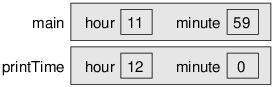
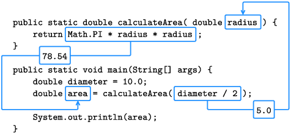
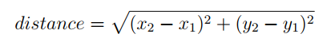
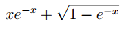

فصل چهارم
متدها و تست کردن
(Methods and Testing)
تا اینجا برنامه هایی نوشتیم که تنها یک متد داشتند، متد main. در این فصل نشان خواهیم داد که چگونه برنامه هایی با چندین متد سازماندهی کنید.
همچنین نگاهی به کلاس Math خواهیم انداخت که متدهایی را برای عملیات های رایج ریاضی ارائه می کند. در نهایت دربارۀ راهبردهایی بحث خواهیم کرد
که به وسیلۀ آنها می توانید کد خود را به تدریج توسعه داده و تست کنید.
4.1 تعریف متدهای جدید
(Defining New Methods)
برخی متدها محاسبه ای را انجام داده و نتیجه را برمی گردانند. برای مثال nextDouble ورودی را از صفحه کلید خوانده و آن را به عنوان
مقداری از نوع double برمی گرداند. متدهای دیگر مانند println دنباله ای از اعمال را بدون برگرداندن نتیجه ای انجام می دهند. جاوا از کلمۀ کلیدی void برای تعریف
این متدها استفاده می کند:
public static void newLine() {
System.out.println();
}
public static void main(String[] args) {
System.out.println("First line.");
newLine();
System.out.println("Second line.");
}
در این مثال متدهای newLine و main هر دو public هستند، که به این معنی است که می توان آنها را از کلاس های دیگر فراخوانی کرد (invoke) یا صدا زد (call).
و هر دوی آنها void هستند، که یعنی نتیجه ای را بر نمی گردانند (بر خلاف nextDouble). خروجی برنامۀ فوق در زیر آمده است:
First line.
Second line.
به فضای خالی اضافی بین خطوط توجه کنید. اگر فضای بیشتری بین آنها می خواستیم، می توانستیم همان متد را چندین بار فراخوانی کنیم. یا می توانستیم متد دیگری بنویسیم
(به نام threeLine که سه خط خالی را نشان دهد.).
public class NewLine {
public static void newLine() {
System.out.println();
}
public static void threeLine() {
newLine();
newLine();
newLine();
}
public static void main(String[] args) {
System.out.println("First line.");
threeLine();
System.out.println("Second line.");
}
}
در این مثال اسم کلاس NewLine است. مرسوم است که اسامی کلاس ها با حرف بزرگ شروع شود. NewLine حاوی سه متد است، newLine، threeLine، و main.
به یاد داشته باشید که جاوا به حروف کوچک و بزرگ حساس است بنابراین NewLine و newLine با هم متفاوتند.
معمولا اسامی متدها با یک حرف کوچک شده و برای نوشتن آنها از روش "camel case" استفاده می شود. کمل کیس نام جالبی است برای نوشتن
چنین اسمی: jammingWordsTogetherLikeThis [همانطور که از اسم کمل کیس مشخص است، اشاره به کوهان شتر دارد. در این روش حروف اول کلمات میانی با حرف
بزرگ نوشته می شوند.]. می توانید برای متدها هر اسمی انتخاب کنید به جز main و یا هر یک از کلمات کلیدی جاوا.
4.2 جریان اجرا
(Flow of Execution)
وقتی به کلاسی نگاه می کنید که چندین متد دارد، تمایل دارید آن را از بالا به پایین بخوانید، اما جریان اجرا (flow of execution) یا ترتیبی که
برنامه در واقع اجرا می شود اینگونه نیست. برنامۀ NewLine متدها را برخلاف ترتیبی که لیست شده اند اجرا می کند.
برنامه ها فارغ از اینکه متد main در کجای فایل نوشته شده باشد، همیشه از اولین گزارۀ متد main اجرا می شوند. در هر لحظه یکی از گزاره ها به ترتیب اجرا می شود
تا زمانی که برنامه به فراخوانی یک متد می رسد که می توانید آن را به عنوان انحراف یا تغییر جهتی در اجرای برنامه در نظر بگیرید. اجرای برنامه به جای آنکه به گزارۀ
بعدی برود، به اولین خط متد فراخوانی شده می پرد و گزاره های داخل آن متد را اجرا می کند و سپس دقیقا به همان محل قبلی بر می گردد.
این ساده به نظر می رسد اما به یاد داشته باشید که یک متد می تواند متد دیگری را فراخوانی کند. در مثال قبلی، جریان اجرا برای اجرای گزاره های متد threeLine
در میانۀ متد main از این متد خارج می شود. در داخل متد threeLine نیز این جریان برای اجرای متد newLine از متد threeLine خارج می شود. متد newLine متد println
را فراخوانی می کند که این خود نیز موجب انحراف یا خروجی دیگر در جریان اجرا می شود.
خوشبختانه جاوا در ردیابی نحوۀ اجرای متدها خوب عمل می کند. وقتی println تمام می شود، جاوا به محلی در newLine بر میگردد که آنجا را برای اجرای
متد println ترک کرده بود، وقتی اجرای متد newLine به انتها می رسد، به threeLine بر می گردد و وقتی اجرای threeLine به اتمام می رسد، به متد main باز می گردد.
سوالی که برای افرادی مبتدی پیش می آید این است که وقتی می توانیم همۀ کدها را داخل متد main بنویسیم، آیا نوشتن متدهای دیگر ارزش زحمتی که برای آن کشیده می شود
را دارد. مثال NewLine چند دلیل برای این کار ارائه می کند:
- ساختن یک متد جدید به شما اجازه می دهد تا برای بخشی از گزاره ها اسمی انتخاب کنید و این کار خواندن و فهمیدن کد را ساده تر می کند.
- معرفی متدهای جدید از نوشتن کدهای تکراری جلوگیری می کند و امکان ساخت برنامه ای کوتاه تر را فراهم می کند. برای مثال برای
نوشتن 9 خط جدید متوالی می توانید متد threeLine را سه بار فراخوانی کنید.
- یک تکنیک حل مسئلۀ رایج، تجزیۀ مسئله به خرده مسئله های کوچک تر است. متدها شما را قادر می سازند تا بر روی هر خرده مسئله به تنهایی تمرکز کنید،
و سپس برای دستیابی به راه حل نهایی آنها را به هم ملحق کنید.
شاید از همۀ اینها مهمتر این باشد که سازماندهی کد در چندین متد به شما اجازه می دهد تا بخش های مجزای برنامه را به صورت جداگانه مورد تست و آزمون قرار دهید.
اطمینان از اینکه هر متد به درستی کار می کند، دستیابی به یک برنامۀ پیچیدۀ کارا را ساده تر می کند.
4.3 پارامترها و آرگومان ها
(Parameters and Arguments)
برخی از متدهایی که تا اینجا استفاده کردیم نیازمند آرگومان هایی بودند. آرگومان ها مقادیری هستند که به هنگام فراخوانی متد آنها را داخل پرانتز
قرار می دهید.
برای مثال متد println آرگومانی از نوع رشته (String) را می پذیرد. برای نمایش یک پیام، باید پیام System.out.println("Hello") را بنویسید.
متد printf نیز به طور مشابه می تواند چندین آرگومان داشته باشد. گزارۀ System.out.printf("%d in = %f cm\n", inch, cm) دارای سه آرگومان است:
فرمت استرینگ، مقدار inch، و مقدار cm.
از آرگومان ها به هنگام فراخوانی متد استفاده می کنید اما پارامترها را موقع تعریف متد نام گذاری می کنید. پارامترها متغیرهایی هستند که آرگومان های مورد نیاز را مشخص می کنند.
کلاس زیر مثالی در این باره را نشان می دهد:
public class PrintTwice {
public static void printTwice(String s) {
System.out.println(s);
System.out.println(s);
}
public static void main(String[] args) {
printTwice("Don't make me say this twice!");
}
}
متد printTwice دارای پارامتری به نام s است از نوع String. وقتی این متد را فراخوانی می کنید باید آرگومانی از نوع String به آن ارائه دهید.
پیش از آنکه متد اجرا شود، مقدار آرگومان در پارامتر قرار می گیرد. در مثال printTwice، آرگومان "!Don't make me say this twice"، مقداری است که در
پارامتر s قرار می گیرد.
این فرایند، پاس دادن پارامتر (parameter passing) نامیده می شود چون مقداری از بیرون متد به داخل متد پاس داده می شود. آرگومان می تواند هر نوع عبارتی باشد،
بنابراین اگر متغیری از نوع String دارید، می توانید از مقدار آن به عنوان آرگومان استفاده کنید:
String message = "Never say never.";
printTwice(message);
نوع مقداری که به عنوان آرگومان ارائه می کنید باید معادل (یا متناسب) نوع پارامتر باشد. برای مثال اگر کد زیر را امتحان کنید:
printTwice(17); // syntax error
پیغام خطایی مانند پیغام زیر دریافت می کنید:
File: Test.java [line: 10]
Error: method printTwice in class Test cannot be applied
to given types;
required: java.lang.String
found: int
reason: actual argument int cannot be converted to
java.lang.String by method invocation conversion
این پیغام خطا می گوید که پارامتر از نوع String است اما آرگومان ارائه شده از نوع int است. در مورد متد printTwice، جاوا عدد صحیح 17 را به صورت خودکار به رشتۀ
"17" تبدیل نخواهد کرد.
در برخی موارد جاوا می تواند آرگومانی را به صورت خودکار از یک نوع به نوع دیگر تبدیل کند. برای مثال Math.sqrt نیازمند آرگومانی از نوع double است، اما
اگر آن را با آرگومانی از نوع int مثل (25)Math.sqrt فراخوانی کنید، مقدار صحیح 25 به صورت خودکار به مقدار ممیز-شناور 25.0 تبدیل می شود.
پارامترها و دیگر متغیرهای یک متد فقط در داخل همان متد قابل دسترسی هستند. در مثال printTwice پارامتر s در متد main وجود ندارد. اگر این متغیر را در متد main
استفاده کنید از کمپایلر خطا دریافت می کنید.
به طور مشابه، متغیر message در متد main تعریف شده است و چنین متغیری در printTwice وجود ندارد. از آنجا که متغیرها فقط در درون متدهایی که تعریف شده اند
امکان دسترسی دارند، به آنها اغلب متغیرهای لوکال یا محلی (local variables) گفته می شود.
4.4 چندین پارامتر
(Multiple Parameters)
مثالی از متدی با دو پارامتر:
public static void printTime(int hour, int minute) {
System.out.print(hour);
System.out.print(":");
System.out.println(minute);
}
برای فراخوانی این متد باید دو عدد صحیح را به عنوان آرگومان به آن پاس دهیم:
int hour = 11;
int minute = 59;
printTime(hour, minute);
افراد مبتدی گاهی موقع اعلان آرگومان ها مرتکب چنین اشتباهی می شوند:
int hour = 11;
int minute = 59;
printTime(int hour, int minute); // syntax error
این خطای سینتکس است چون کمپایلر int hour و int minute را به عنوان اعلان متغیر در نظر می گیرد نه به عنوان عبارت های حاوی مقدار. اگر
آرگومان ها فقط اعدادی صحیح باشند، نباید نوع آنها را به اینصورت اعلان کنید:
printTime(int 11, int 59); // syntax error
با در کنار هم قرار دادن قطعات کد، برنامۀ کامل به صورت زیر خواهد بود:
public class PrintTime {
public static void printTime(int hour, int minute) {
System.out.print(hour);
System.out.print(":");
System.out.println(minute);
}
public static void main(String[] args) {
int hour = 11;
int minute = 59;
printTime(hour, minute);
}
}
printTime دارای دو پارامتر است به نام های hour و minute. و main دو متغیر دارد که اسم آن ها هم hour و minute است. با وجودیکه آنها
اسامی مشابهی دارند، اما متغیرهای مشابهی نیستند. hour در printTime و hour در main به محل های متفاوتی از حافظه اشاره می کنند و
می توانند مقادیر متفاوتی داشته باشند.
برای مثال می توانید printTime را به صورت زیر فراخوانی کنید:
int hour = 11;
int minute = 59;
printTime(hour + 1, 0);
جاوا پیش از فراخوانی متد، مقدار آرگومان ها را تعیین می کند. در این مثال، نتیجۀ این تعیین 12 و 0 است. سپس جاوا آن مقادیر را
در پارامترها قرار می دهد. در printTime مقدار hour برابر با 12 است نه 11، و مقدار minute برابر با 0 است نه 59. بعلاوه، اگر printTime یکی از پارامترهایش
را اصلاح کند، این تغییر تاثیری بر متغیرهای متد main ندارد.
4.5 دیاگرام های پشته یا استک
(Stack Diagrams)
یک شیوه برای ردیابی متغیرها ترسیم دیاگرام (نمودار) پشته است که نموداری برای حافظه است که متدهای در حال اجرا را نمایش می دهد.
در این دیاگرام برای هر متد باکسی به نام فریم وجود دارد که حاوی پارامترهای متد و متغیرهای لوکال است. اسم متد خارج از فریم،
و اسم متغیرها و پارامترها داخل فریم نوشته می شود.
دیاگرام های پشته هم مانند دیاگرام های حافظه متغیرها و متدها را در لحظۀ خاصی از زمان نشان می دهند. شکل 4.1 یک دیاگرام پشته در ابتدای متد printTime است.
توجه کنید که main در بالا قرار دارد چون این متد اول اجرا می شود.

تصویر 4.1: دیاگرام پشته برای printTime(hour + 1, 0)
دیاگرام های پشته به شما کمک می کنند تا اسکوپ (scope) یک متغیر را به تصویر بکشید. اسکوپ [دامنه یا قلمرو] منطقه ای از برنامه است که
متغیر در آن محدوده استفاده می شود.
دیاگرام های پشته مدل ذهنی مناسبی برای چگونگی کارکرد متغیرها و متدها در زمان اجرا (run-time) هستند. یادگیری ردیابی اجرای یک برنامه
بر روی کاغذ (یا روی وایت برد) مهارت سودمندی برای ارتباط با دیگر برنامه نویس هاست.
ابزارهای آموزشی می توانند به صورت خودکار دیاگرام های پشته را برای شما رسم کنند. برای مثال Java Tutor (https://thinkjava.org/javatutor) شما را قادر می سازد تا در یک برنامه
به جلو و عقب پیش رفته و فریم های پشته و متغیرها را در هر گام ببینید. می توانید مثالهایی در این باره را در وبسایت این برنامه بررسی کنید.
4.6 متدهای Math
(Math Methods)
برای انجام کار همیشه مجبور نیستید متدهای جدیدی بنویسید. همانطور که پیشتر گفتیم کتابخانۀ جاوا حاوی هزاران کلاس است که می توانید از آنها استفاده کنید.
برای مثال کلاس Math امکان انجام عملیات های رایج ریاضی را فراهم می کند:
double root = Math.sqrt(17.0);
double angle = 1.5;
double height = Math.sin(angle);
خط اول، متغیر root را با ریشۀ دوم یا جذر (square root) 17 مقداردهی می کند. خط سوم سینوس 1.5 (مقدار زاویه) را بدست می آورد.
کلاس Math در پکیج java.lang قرار دارد بنابراین مجبور نیستید آن را ایمپورت کنید.
مقادیری که به توابع مثلثاتی -سینوس، کسینوس، و تانژانت- پاس داده می شوند باید در واحد رادیان (radians) باشند. برای تبدیل از درجه به رادیان
مقدار را تقسیم بر 180 کرده و بر عدد پی ضرب می کنیم. کلاس Math برای راحتی در محاسبه، ثابتی به نام PI ارائه می کند که حاوی تقریبی از عدد پی است.
double degrees = 90;
double angle = degrees / 180.0 * Math.PI;
توجه کنید که PI با حروف بزرگ نوشته می شود. جاوا Pi، pi، یا pie را به عنوان چنین ثابتی تشخیص نمی دهد. همچنین PI اسم یک ثابت است
نه اسم یک متد بنابراین پرانتز ندارد. این دربارۀ ثابت Math.E نیز صادق است که تقریبی است از عدد اویلر.
تبدیل «از» رادیان و «به» رادیان عملی رایج است، بنابرایان کلاس Math متدهایی را برای انجام آنها ارائه می دهد:
double radians = Math.toRadians(180.0);
double degrees = Math.toDegrees(Math.PI);
متد کاربردی دیگر متد round است که یک مقدار ممیز-شناور را گرفته و به نزدیک ترین عدد صحیح گرد می کند و عددی از نوع long بر می گرداند. حاصل برنامۀ زیر 63 است (گرد شدۀ 62.8319):
long x = Math.round(Math.PI * 20.0);
نوع long مانند نوع int است اما بزرگتر است. به طور خاص، نوع int از 32 بیت حافظه استفاده می کند که بزرگترین مقداری که می تواند نگهدارد معادل 1 - 31^2 است که حدود 2 میلیارد است.
نوع long از 64 بیت حافظه استفاده می کند بنابراین بزرگترین مقدار آن 1 - 63^2 است که چیزی حدود 9 کویینتیلیون (quintillion) است.
زمانی را برای خواندن داکیومنت این متدها و متدهای دیگر کلاس Math اختصاص دهید. ساده ترین راه پیدا کردن داکیومنت کلاس های جاوا این است که کلمۀ Java را به همراه
اسم کلاس مورد نظر در وب جستجو کنید.
4.7 ترکیب
(Composition)
احتمالا [در دروس ریاضی] آموخته اید که چگونه حاصل عبارت های ساده ای مانند sin(π/2) و log(1/x) را تعیین کنید. برای این کار ابتدا حاصل عبارت داخل پرانتز را تعیین می کنید که آرگومان تابع است.
سپس می توانید حاصل خود تابع را یا به صورت دستی یا با ماشین حساب تعیین کنید.
این فرایند را می توان برای تعیین حاصل عبارت های پیچیده تری مانند log(1/sin(π/2)) تکرار کرد. نخست آرگومان درونی ترین تابع را تعیین می کنیم (π/2 = 1.57)، سپس حاصل خود تابع
را تعیین می کنیم (sin(1.57) = 1.0) و غیره.
[دربارۀ ترجمۀ evaluate: در تمام طول ترجمه evaluate را اگر دربارۀ expressionها یا هر گونه محاسبه ای که حاصل مشخصی دارد به کار رفته باشد،
«تعیین کردن» یا «ارزیابی کردن» ترجمه کرده ام.
هر دو ترجمه در واژه نامۀ ریاضی جهاد دانشگاهی برای evaluate آمده است.
evaluation در ریاضیات:
.A completion of a mathematical operation; a valuation
evaluation در برنامه نویسی:
.Determination of the value of a variable or expression
ترجمه های دیگری از جمله «برآورد کردن» که در دیکشنری های عمومی
یا حتی برخی فرهنگ لغت های کامپیوتر آمده است و معنی تخمین و حدس غیر دقیق می دهد را برای evaluate استفاده نکرده ام. اگر جایی در ترجمه «برآورد کردن»
آمده باشد، ترجمۀ estimate است.]
متدهای جاوا همانند توابع در ریاضی، می توانند برای حل مسائل پیچیده با هم ترکیب شوند. یعنی می توانید متدی را به عنوان بخشی از یک متد دیگر استفاده کنید. در واقع
مادامیکه مقدار حاصل از یک عبارت از نوع متناسب و درستی برخوردار باشد می توانید از هر عبارتی به عنوان آرگومان یک متد استفاده کنید [منظور از متناسب و درست این است که
نوع مقدار حاصل که تبدیل به آرگومان متد دیگر می شود، متناسب با نوع پارامتر آن متد باشد. درباره معنی تناسب قبلا توضیح داده شده است. برای مثال آرگومانی از نوع int با پارامتری از نوع double
تناسب دارد اما بر عکس آن صادق نیست، مگر اینکه به صراحت نوع آن را با استفاده از عملگر (int) تبدیل کنید (و حتما چنانکه پیشتر در کتاب گفته شده مستحضر هستید
که (int) در اینجا نوعی عملگر تکی محسوب می شود که بر روی یک عملوند عمل می کند)]:
double x = Math.cos(angle + Math.PI / 2.0);
این گزاره، Math.PI را تقسیم بر 2.0 می کند، مقدار حاصل را با angle جمع می کند و کسینوس مجموع را محاسبه می کند. همچنین می توانید حاصل یک متد را گرفته و به عنوان
آرگومان به متد دیگری پاس دهید:
double x = Math.exp(Math.log(10.0));
در جاوا متد log همیشه از مبنای e استفاده می کند. بنابراین گزارۀ فوق لگاریتم 10 را بر مبنای e یافته و سپس e را به توان عدد حاصل می رساند. و نتیجه
در متغیر x قرار می گیرد [متد ()Math.exp عددی از نوع double را به عنوان آرگومان گرفته و e را که برابر با 2.718281828459045 است به توان آن می رساند.].
برخی از متدهای ریاضی بیش از یک آرگومان می گیرند. برای مثال Math.pow دو آرگومان می گیرد و اولی را به توان دومی می رساند. خط زیر 2 به توان 10 را محاسبه کرده
و مقدار حاصل را که 1024.0 است در متغیر x قرار می دهد:
double x = Math.pow(2.0, 10.0);
افراد مبتدی هنگام استفاده از متدهای کلاس Math اغلب کلمۀ Math را فراموش می کنند. برای مثال اگر فقط بنویسید x = pow(2.0, 10.0)، کمپایلر پیغام خطا خواهد داد:
File: Test.java [line: 5]
Error: cannot find symbol
symbol: method pow(double,double)
location: class Test
پیغام "cannot find symbol" گیج کننده است اما دو خط آخر راهنمایی خوبی می کنند. کمپایلر به دنبال متدی به نام pow در فایل Test.java می گردد (فایل مربوط به این مثال).
اگر موقع اشاره به متدی اسم کلاس را مشخص نکنید، کمپایلر در کلاس کنونی به عنوان کلاس پیش فرض به دنبال تعریف آن می گردد.
4.8 ریترن مقدارها
(Return Values)
وقتی متدی void را فراخوانی می کنید، کل عمل فراخوانی معمولا در همان یک خط انجام می شود. برای مثال:
printTime(hour + 1, 0);
از سوی دیگر وقتی متدی که مقداری را برمی گرداند فراخوانی می کنید، باید با آن مقداری که ریترن می شود کاری انجام دهید. معمولا این مقدار را
در متغیری قرار می دهیم یا از آن به عنوان بخشی از یک عبارت استفاده می کنیم مانند مثال زیر:
double error = Math.abs(expect - actual);
double height = radius * Math.sin(angle);
متدهایی که مقداری را ریترن می کنند به دو طریق با متدهای void تفاوت دارند:
- نوع مقداری که ریترن می شود را اعلان می کنند.
- حداقل از یک گزارۀ return برای ارائۀ مقداری که ریترن می شود استفاده می کنند.
در زیر مثالی از برنامه ای به نام Circle.java وجود دارد. متد calculateArea مقداری از نوع double را می گیرد و مساحت دایره ای با شعاعی معادل
آن مقدار double را برمی گرداند (یعنی πr^2):
public static double calculateArea(double radius) {
double result = Math.PI * radius * radius;
return result;
}
این متد مطابق معمول، public و static است. اما در جایی که همیشه void را می دیدیم، اینبار double را می بینیم که یعنی مقداری که این
متد ریترن می کند از نوع double است.
خط آخر، فرم جدیدی از گزارۀ return است و معنی آن «ریترن بلافاصله از این متد و استفاده از عبارتی که در ادامۀ کلمۀ return می آید به عنوان مقدار ریترن شده» است.
عبارتی که بعد از کلمۀ return ارائه می کنید می تواند پیچیده باشد، بنابراین می توانیم متد بالا رو به صورت خلاصه تر بنویسیم:
public static double calculateArea(double radius) {
return Math.PI * radius * radius;
}
از سوی دیگر استفاده از متغیرهای موقتی مانند result [که در مثال خلاصه تر حذف شده است] اغلب کار اشکال زدایی را ساده تر می کنند مخصوصا وقتی که بوسیلۀ یک دیباگر تعاملی
در حال بررسی کد هستید (پیوست A.6 را ببینید).
تصویر 4.2 جریان مقادیر داده در طول اجرای برنامه را به تصویر می کشد. وقتی متد main متد calculateArea را فراخوانی می کند، پارامتر radius با مقدار
5.0 مقداردهی می شود. سپس متد calculateArea مقدار 78.54 را ریترن می کند که متغیر area را مقداردهی می کند.

تصویر 4.2: پاس دادن یک پارامتر و ذخیره کردن مقدار ریترن شده
نوع عبارت در گزارۀ return باید با نوع مقداری که در تعریف متد به عنوان نوع ریترن مشخص شده است تطابق داشته باشد. وقتی
نوع ریترن را double اعلان کرده اید، یعنی قول داده اید که متد در نهایت مقداری double را تولید و برخواهد گرداند. اگر از کلمۀ کلیدی
return بدون عبارت (expression) استفاده کنید یا از مقداری با نوعی مغایر با نوعی که تعیین کرده اید استفاده کنید، کمپایلر پیغام خطا خواهد داد.
4.9 توسعۀ تدریجی
(Incremental Development)
افراد اغلب این اشتباه را مرتکب می شوند که مقدار زیادی کد می نویسند بدون آنکه آن را کمپایل و اجرا کنند. سپس زمان زیادی را صرف اشکال زدایی
می کنند. استفاده از «توسعۀ تدریجی» رویکرد بهتری است [در اینجا ترجمۀ incremental به تدریجی به جای افزایشی مناسب تر به نظر می رسد.].
جنبه های مهم این رویکرد عبارتند از:
- شروع با برنامۀ کوچکی که کار می کند [مثل همان Hello World] و ایجاد تغییرات کوچک و تدریجی در آن. اگر در هر نقطه ای خطایی رخ داد، می دانید
که کجا باید دنبال علت آن بگردید.
- استفاده از متغیرها برای نگهداری مقادیر واسط و میانجی به گونه ای که بتوان آنها را با استفاده از گزاره های پرینت یا دیباگر چک کرد [
متغیرها و یا مقادیر واسط و میانجی متغیرهایی هستند که گاهی افراد برای کوتاه کردن برنامه از آنها استفاده نمی کنند و برای مثال به جای آنکه
حاصل عبارتی را در متغیری واسط ذخیره کرده و سپس آن متغیر را ریترن کنند، خود عبارت را مستقیما در گزارۀ ریترن می نویسند. این کار امکان بررسی
و اشکال زدایی آن عبارت را از برنامه نویس سلب می کند].
- پس از اطمینان از اینکه برنامه به خوبی کار می کند، می توانید چندین گزاره را در عبارت هایی مرکب با هم یکی کنید (اما تنها وقتی که این کار خواندن برنامه
را دشوار نمی کند.).
برای مثال، فرض کنید می خواهیم فاصلۀ میان دو نقطه را با در اختیار داشتن مختصات (x1, y1) و (x2, y2) به دست آوریم. بر اساس تعریف معمول فاصله داریم:

نخستین گام این است که ببینیم متد distance باید در جاوا چگونه پیاده سازی شود. به بیان دیگر، چه ورودی هایی داریم (parameters)، و
چه خروجی هایی (return value)؟ در این متد، پارامترها دو نقطه هستند، و طبیعی است که برای آنها از چهار مقدار double استفاده کنیم.
مقدار ریترن شده distance است که آن هم باید از نوع double باشد.
می توانیم طرح و نقشه ای برای این متد بنویسیم که گاهی stub نامیده می شود. stub، اعلان متد و گزارۀ return را در بر دارد:
public static double distance
(double x1, double y1, double x2, double y2) {
return 0.0; // stub
}
در مثال فوق گزارۀ return یک placeholder یا نگهدارندۀ مکان است که تنها برای کمپایل کردن برنامه ضروری است [چون در اعلان متد گفته شده که باید مقداری
از نوع double ریترن شود.]. در این گام برنامه هیچ کار مفیدی را انجام نمی دهد، اما بهتر است که برنامه را کمپایل کنید تا پیش از اضافه کردن
کدهای بیشتر اگر خطای سینتکسی وجود داشت رفع کنید.
ایدۀ تست کردن برنامه پیش از ایجاد متدهای جدید فکر خوبی است. انجام این کار به شما در نحوۀ پیاده سازی متدها کمک می کند. برای تست یک متد می توانیم
آن را با استفاده از مقادیر نمونه (هر مقداری که با نوع پارامتر هماهنگ باشد.) فراخوانی کنیم:
double dist = distance(1.0, 2.0, 4.0, 6.0);
بر اساس این مقادیر، فاصلۀ افقی 3.0 و فاصلۀ عمودی 4.0 است. بنابراین حاصل باید 5.0 باشد که وتر مثلثی با اضلاع 5-4-3 است.
پیش از تست کردن یک متد باید خودتان پاسخ صحیح را بدانید [بنابراین از اعداد کوچک و ساده استفاده کنید که محاسبۀ آنها به صورت دستی
هم آسان باشد.].
پس از آنکه stub را کمپایل کردیم، می توانیم شروع به اضافه کردن کدها به صورت یک خط یک خط کنیم. پس از هر تغییر تدریجی، برنامه را دوباره کمپایل
و اجرا می کنیم. با این شیوه اگر خطایی وجود داشت، دربارۀ محل خطا ایدۀ خوبی داریم: علت خطا همان خط جدیدی است که اضافه کرده ایم.
گام بعدی یافتن اختلاف x2 − x1 و y2 − y1 است. مقادیر اختلاف آنها را در متغیرهای موقتی به نام های dx و dy ذخیره می کنیم، بنابراین می توانیم قبل از جلوتر رفتن،
آنها را با استفاده از گزاره های پرینت مورد آزمون قرار دهیم. این مقادیر حاصل باید 3.0 و 4.0 باشند.
public static double distance
(double x1, double y1, double x2, double y2) {
double dx = x2 - x1;
double dy = y2 - y1;
System.out.println("dx is " + dx);
System.out.println("dy is " + dy);
return 0.0; // stub
}
پس از آنکه نوشتن متد به پایان رسید گزاره های پرینت را حذف خواهیم کرد. چنین کدی scaffolding یا «داربست» نامیده می شود چون این کد در ساختن برنامه
به ما کمک می کند اما خودش جزئی از برنامۀ نهایی نیست.
گام بعدی به دست آوردن مجذور dx و dy است. برای این کار می توانیم از متد Math.pow استفاده کنیم، اما ساده تر (و بهینه تر) است که آنها را در خودشان ضرب کنیم.
سپس مجموع مجذورات را حساب کرده و حاصل را پرینت می کنیم:
public static double distance
(double x1, double y1, double x2, double y2) {
double dx = x2 - x1;
double dy = y2 - y1;
double dsquared = dx * dx + dy * dy;
System.out.println("dsquared is " + dsquared);
return 0.0; // stub
}
در این مرحله باید دوباره برنامه را کمپایل و اجرا کنیم و مقدار میانجی را که باید برابر با 25.0 باشد چک کنیم. در نهایت می توانیم از متد
Math.sqrt برای محاسبۀ نتیجه و ریترن کردن آن استفاده کنیم:
public static double distance
(double x1, double y1, double x2, double y2) {
double dx = x2 - x1;
double dy = y2 - y1;
double dsquared = dx * dx + dy * dy;
double result = Math.sqrt(dsquared);
return result;
}
همچنانکه تجربۀ شما در برنامه نویسی بیشتر می شود، می توانید هر بار بیش از یک خط کد را نوشته و دیباگ کنید. اما اگر متوجه شدید زمان زیادی
را صرف دیباگ کردن برنامه می کنید، سعی کنید گام های کوچکتری بردارید.
4.10 واژگان
(Vocabulary)
void:
نوع خاصی از ریترن که بیانگر متدی است که مقداری را ریترن نمی کند..
فراخوانی (invoke):
موجب اجرای متدی شدن. «صدا زدن» (calling) متد هم نامیده می شود.
جریان اجرا (flow of execution):
ترتیب اجرای متدها و گزاره ها توسط جاوا. این جریان اجرا در فایل سورس الزاما از بالا به پایین نیست.
آرگومان (argument):
مقداری که هنگام صدازدن یک متد به آن ارائه می کنید. این مقدار باید از نوعی باشد که متد انتظار دارد.
پارامتر (parameter):
بخشی از اطلاعاتی که متد پیش از اجرا به آن نیاز دارد. پارامترها متغیر هستند: یعنی دارای مقدار و نوع هستند.
پاس دادن پارامتر (parameter passing):
فرایند مقداردهی یک متغیر پارامتر با استفاده از مقدار یک آرگومان.
متغیر لوکال (local variable):
متغیری که داخل یک متد تعریف شده است. متغیرهای لوکال از بیرون متد قابل دسترسی نیستند.
دیاگرام یا نمودار پشته (stack diagram):
ارائه ای گرافیکی از متغیرهایی که به متدها تعلق دارند. صدازدن متدها در جریان اجرای برنامه از بالا به پایین پشته می شوند [بنابراین جریان اجرای برنامه الزاما از بالا به پایین نیست
چون ممکن است ساختارهای کنترلی و متدها انحرافی در جریان اجرا ایجاد کنند، اما خود متدها در نمودار پشته از بالا به پایین قرار می گیرند. این جریان بالا به پایین بر اساس
ترتیب اجرای آنهاست. چون متد main پیش از همۀ متدها اجرا می شود، در نمودار پشته بالا تر از باقی متدها قرار می گیرد.].
فریم (frame):
در دیاگرام پشته ارائه ای از متغیرها و پارامترهای یک متد را به همراه مقادیرشان در همان لحظه، فریم می نامند.
اسکوپ (scope):
منطقه ای از یک برنامه که متغیر در آن محدوده قابل استفاده است.
ترکیب (composition):
توانایی ترکیب عبارت ها و گزاره های ساده در عبارت ها و گزاره هایی مرکب.
نوع ریترن (return type):
نوع مقداری که یک متد ریترن می کند.
مقدار ریترن (return value):
مقداری که به عنوان نتیجۀ فراخوانی متد ارائه می شود.
متغیر موقت (temporary variable):
متغیری با عمر کوتاه که اغلب برای اشکال زدایی برنامه استفاده می شود.
توسعۀ تدریجی (incremental development):
فرایند ساخت برنامه ها به وسیلۀ نوشتن تعداد کمی خط کد در هر زمان، و کمپایل کردن و تست کردن برنامه پس از هر تغییر کوچک.
استاب (stub):
یک placeholder یا نگهدارندۀ مکان برای متدی ناکامل به صورتی که کلاس کمپایل شود.
داربست (scaffolding):
کدی که در طول توسعۀ برنامه استفاده می شود اما بخشی از نسخۀ نهایی برنامه نیست.
4.11 تمرین ها
(Defining New Methods)
public static void newLine() {
System.out.println();
}
public static void main(String[] args) {
System.out.println("First line.");
newLine();
System.out.println("Second line.");
}
First line.
Second line.
public class NewLine {
public static void newLine() {
System.out.println();
}
public static void threeLine() {
newLine();
newLine();
newLine();
}
public static void main(String[] args) {
System.out.println("First line.");
threeLine();
System.out.println("Second line.");
}
}
(Flow of Execution)
(Parameters and Arguments)
public class PrintTwice {
public static void printTwice(String s) {
System.out.println(s);
System.out.println(s);
}
public static void main(String[] args) {
printTwice("Don't make me say this twice!");
}
}
String message = "Never say never.";
printTwice(message);
printTwice(17); // syntax error
File: Test.java [line: 10]
Error: method printTwice in class Test cannot be applied
to given types;
required: java.lang.String
found: int
reason: actual argument int cannot be converted to
java.lang.String by method invocation conversion
(Multiple Parameters)
public static void printTime(int hour, int minute) {
System.out.print(hour);
System.out.print(":");
System.out.println(minute);
}
int hour = 11;
int minute = 59;
printTime(hour, minute);
int hour = 11;
int minute = 59;
printTime(int hour, int minute); // syntax error
printTime(int 11, int 59); // syntax error
public class PrintTime {
public static void printTime(int hour, int minute) {
System.out.print(hour);
System.out.print(":");
System.out.println(minute);
}
public static void main(String[] args) {
int hour = 11;
int minute = 59;
printTime(hour, minute);
}
}
int hour = 11;
int minute = 59;
printTime(hour + 1, 0);
(Stack Diagrams)
(Math Methods)
double root = Math.sqrt(17.0);
double angle = 1.5;
double height = Math.sin(angle);
double degrees = 90;
double angle = degrees / 180.0 * Math.PI;
double radians = Math.toRadians(180.0);
double degrees = Math.toDegrees(Math.PI);
long x = Math.round(Math.PI * 20.0);
(Composition)
evaluation در ریاضیات:
.A completion of a mathematical operation; a valuation
evaluation در برنامه نویسی:
.Determination of the value of a variable or expression
ترجمه های دیگری از جمله «برآورد کردن» که در دیکشنری های عمومی یا حتی برخی فرهنگ لغت های کامپیوتر آمده است و معنی تخمین و حدس غیر دقیق می دهد را برای evaluate استفاده نکرده ام. اگر جایی در ترجمه «برآورد کردن» آمده باشد، ترجمۀ estimate است.]
double x = Math.cos(angle + Math.PI / 2.0);
double x = Math.exp(Math.log(10.0));
double x = Math.pow(2.0, 10.0);
File: Test.java [line: 5]
Error: cannot find symbol
symbol: method pow(double,double)
location: class Test
(Return Values)
printTime(hour + 1, 0);
double error = Math.abs(expect - actual);
double height = radius * Math.sin(angle);
public static double calculateArea(double radius) {
double result = Math.PI * radius * radius;
return result;
}
public static double calculateArea(double radius) {
return Math.PI * radius * radius;
}
(Incremental Development)
public static double distance
(double x1, double y1, double x2, double y2) {
return 0.0; // stub
}
double dist = distance(1.0, 2.0, 4.0, 6.0);
public static double distance
(double x1, double y1, double x2, double y2) {
double dx = x2 - x1;
double dy = y2 - y1;
System.out.println("dx is " + dx);
System.out.println("dy is " + dy);
return 0.0; // stub
}
public static double distance
(double x1, double y1, double x2, double y2) {
double dx = x2 - x1;
double dy = y2 - y1;
double dsquared = dx * dx + dy * dy;
System.out.println("dsquared is " + dsquared);
return 0.0; // stub
}
public static double distance
(double x1, double y1, double x2, double y2) {
double dx = x2 - x1;
double dy = y2 - y1;
double dsquared = dx * dx + dy * dy;
double result = Math.sqrt(dsquared);
return result;
}
(Vocabulary)
کدهای این فصل در پوشۀ ch04 موجود در پوشۀ ThinkJavaCode2 قرار دارد. نحوۀ دانلود مخزن در مقدمۀ کتاب آمده است. پیش از شروع تمرین ها پیشنهاد می کنیم که مثال ها را کمپایل و اجرا کنید.
اگر هنوز پیوست A.4 را نخوانده اید، اکنون زمان مناسبی برای این کار است. در این پیوست دربارۀ شیوه ای کارامد برای تست کردن برنامه ها توضیح داده شده است که ورودی را از کاربر می گیرد و خروجی خاصی را نمایش می دهد.
تمرین 4.1:
هدف از این تمرین استفاده از کد یکی از تمرین های قبلی و طراحی دوبارۀ آن به عنوان متدی دارای پارامتر است. تمرین قبلی که با آن شروع می کنیم تمرین 2.2 در فصل دو کتاب است.1. متدی به نام printAmerican بنویسید که day، date، month، و year را به عنوان پارامتر بگیرد و آنها را با فرمت آمریکایی نمایش دهد.
2. متد خود را از داخل متد main فراخوانی کنید و با پاس دادن آرگومان های مناسب، آن را تست کنید. خروجی باید چیزی مانند خروجی زیر باشد ( تاریخ در خروجی شما حتما با این تاریخ متفاوت است.):
Monday, July 22, 2019
3. پس از دیباگ کردن printAmerican متد دیگری به نام printEuropean بنویسید که تاریخ را با فرمت اروپایی نمایش دهد.
تمرین 4.2:
این تمرین مروری است بر جریان اجرا در طول برنامه ای که دارای چندین متد است. کد زیر را بخوانید و به سوالات پاسخ دهید:
public static void main(String[] args) {
zippo("rattle", 13);
}
public static void baffle(String blimp) {
System.out.println(blimp);
zippo("ping", -5);
}
public static void zippo(String quince, int flag) {
if (flag < 0) {
System.out.println(quince + " zoop");
} else {
System.out.println("ik");
baffle(quince);
System.out.println("boo-wa-ha-ha");
}
}
1. در این برنامه کدام خط از کد اول، از همه اجرا می شود؟ [در یک برگه و یا اگر کد را نوشته اید، در یک کامنت] آن را با عدد 1 مشخص کنید.
2. عدد 2 را در کنار دومین خطی که اجرا می شود بنویسید و تا انتهای برنامه به همین صورت ترتیب اجرای خط ها را مشخص کنید. اگر خطی بیش از یک بار اجرا می شود می توانید در کنار آن بیش از یک عدد بنویسید.
3. پارامتر blimp وقتی متد baffle فراخوانی می شود چه مقداری دارد؟
4. خروجی این برنامه چیست؟
تمرین 4.3:
به سوالات زیر بدون آنکه برنامه را در کامپیوتر اجرا کنید پاسخ دهید:1. نمودار پشته ای بنویسید که وضعیت برنامه را وقتی متد ping برای اولین بار فراخوانی می شود نشان دهد.
2. خروجی برنامۀ زیر چیست؟ به محل فضاهای خالی و خطوط جدید دقت کنید.
public static void zoop() {
baffle();
System.out.print("You wugga ");
baffle();
}
public static void main(String[] args) {
System.out.print("No, I ");
zoop();
System.out.print("I ");
baffle();
}
public static void baffle() {
System.out.print("wug");
ping();
}
public static void ping() {
System.out.println(".");
}
تمرین 4.4:
اگر دربارۀ اینکه آِیا نوشتن چیزی در برنامه مجاز است یا خیر و اگر غیر مجاز باشد چه رخ خواهد داد سوالی دارید، بهترین کار این است که این سوالات را از کمپایلر بپرسید. سوالات زیر را مورد آزمون قرار دهید و سپس به آن ها پاسخ دهید:1. اگر متدی که مقداری را ریترن می کند فراخوانی کنید اما با مقدار ریترن شده کاری انجام ندهید چه اتفاقی می افتد، یعنی اگر مقدار ریترن شده را در متغیری قرار ندهید یا از آن به عنوان بخشی از یک عبارت بزرگتر استفاده نکنید؟
2. اگر از متدی void به عنوان بخشی از یک عبارت استفاده کنید چه اتفاقی می افتد؟ برای مثال ;System.out.println("boo!") + 7 را امتحان کنید.
تمرین 4.5:
نمودار پشته ای را رسم کنید که وضعیت برنامه را وقتی متد zoop برای دومین بار فراخوانی می شود نشان دهد. خروجی کامل برنامه چیست؟
public static void zoop(String fred, int bob) {
System.out.println(fred);
if (bob == 5) {
ping("not ");
} else {
System.out.println("!");
}
}
public static void main(String[] args) {
int bizz = 5;
int buzz = 2;
zoop("just for", bizz);
clink(2 * buzz);
}
public static void clink(int fork) {
System.out.print("It's ");
zoop("breakfast ", fork);
}
public static void ping(String strangStrung) {
System.out.println("any " + strangStrung + "more ");
}
تمرین 4.6:
بسیاری از محاسبات را می توان با استفاده از عملیات "multadd" به صورت دقیق تری انجام داد. این عملیات سه عملوند می گیرد و a * b + c را حساب می کند. برخی پردازنده ها حتی پیاده سازی سخت افزاری برای این عملیات برای اعداد ممیز-شناور ارائه می دهند.1. برنامۀ جدیدی به نام Multadd.java بسازید.
2. متدی به نام multadd بنویسید که سه مقدار از نوع double را به عنوان پارامتر بگیرد و a * b + c را ریترن کند.
3. متد main را به گونه ای بنویسید که با فراخوانی متد multadd و پاس دادن پارامترهای ساده ای مانند 1.0، 2.0، و 3.0 آن را تست کند.
4. همچنین در متد main از multadd برای محاسبۀ مقادیر زیر استفاده کنید:

5. متدی به نام expSum بنویسید که مقداری double را به عنوان پارامتر گرفته و از متد multadd برای محاسبۀ مقدار زیر استفاده کند:

نکته: برای آنکه e را به توان برسانید از متد Math.exp استفاده کنید.
در انتهای این تمرین نیاز است که متدی بنویسید که متد دیگری که نوشته اید را فراخوانی کند. برای انجام چنین کاری بهتر است نخست متد اولی را با دقت بررسی و از درست کار کردن آن مطمئن شوید و سپس متد دوم را بنویسید. در غیر اینصورت مجبور خواهید بود دو متد را همزمان اشکال زدایی کنید که کار دشواری است.
یکی از اهداف این تکلیف ، تمرین کردن تطبیق الگو (pattern-matching) است. تطبیق الگو عبارتست از توانایی تشخیص مسئله ای خاص به عنوان نمونه ای از یک دستۀ کلی از مسائل.